Working with Spline Curves
This demo illustrates how to use the spmak, spcrv, cscvn and rscvn commands from Curve Fitting Toolbox™ to generate spline curves.
Contents
A Simple Spline Curve
Curve Fitting Toolbox can handle vector-valued splines. A d-vector-valued univariate spline provides a curve in d-space. In this mode, d = 2 is most common, as it gives plane curves.
Here is an example, in which a spline with 2-dimensional coefficients is constructed and plotted.
knots = [1,1:9,9]; curve = spmak( knots, repmat([ 0 0; 1 0; 1 1; 0 1 ], 2,1).' ); t = linspace(2,8,121); values = fnval(curve,t); plot(values(1,:),values(2,:),'LineWidth',2); axis([-.4 1.4 -.2 1.2]), axis equal title('A Spline Curve'); hold on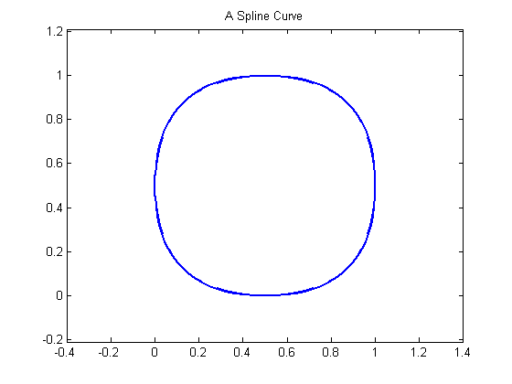
A Word of Caution
You may have noticed that this example did not use fnplt to plot the curve, but instead plotted some points on the curve obtained by fnval. Here is the code again:
t = linspace(2,8,121); values = fnval(curve,t); plot(values(1,:),values(2,:),'LineWidth',2)
Using fnplt directly with this particular spline curve gives the red curve in the figure below.
fnplt(curve,'r',.5); title('The Full Spline Curve, in Red')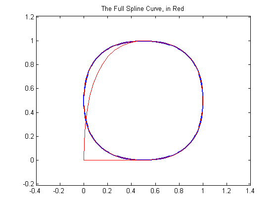
The explanation?
The spline is of order 4, yet the end knots in the knot sequence
knots
knots =
1 1 2 3 4 5 6 7 8 9 9
only have multiplicity 2. Therefore, all the B-splines of order 4 for this knot sequence are 0 at the endpoints of the basic interval. This makes the curve start and stop at (0,0).
A Remedy
Since, in this case, we are really interested only in the curve segment corresponding to the parameter interval [3 .. 7], we can use fnbrk to extract that part, and then have no difficulty plotting it, in yellow, with fnplt.
mycv = fnbrk(curve,[3 7]); fnplt(mycv,'y',2.5); title('The Spline Curve of Interest, in Yellow')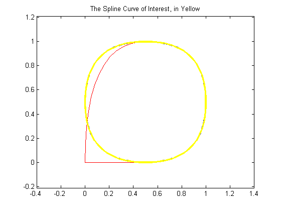
The Area Enclosed By This Curve
Since you now have a spline, namely mycv, that describes the curve (and nothing else), you can easily compute the area enclosed by this closed curve, as follows.
area = diff(fnval(fnint( ... fncmb(fncmb(mycv,[0 1]),'*',fnder(fncmb(mycv,[1 0]))) ... ),fnbrk(mycv,'interval')))
area = -0.8333
With a little effort, you can recognize this as the value of the integral
int y(t) d(x(t)) = int y(t) Dx(t) dt
over the basic interval of the spline mycv, with (x(t),y(t)) := fnval(mycv,t) the point on the curve corresponding to the parameter value t. Here, fncmb(mycv,[1,0]), fncmb(mycv,[0,1]) describe the two components of the spline curve, i.e., the scalar-valued splines x and y.
Also, the curve is roughly a circle with radius 1/2. Hence, you would expect an area of, roughly,
disp(pi/4)
0.7854
But why is the computed area negative? Because the area enclosed by the curve lies to the left as one travels on the curve with increasing t. To verify this, we draw some tangent vectors.
Add Some Tangent Vectors
We redraw the curve and also draw the tangent vector to the curve at some points.
hold off fnplt(mycv,'y',2.5); hold on t = 3:.4:6.2; cv = fnval(curve, t); cdv = fnval(fnder(curve), t); quiver(cv(1,:),cv(2,:), cdv(1,:),cdv(2,:)); title('A Spline Curve With Some Tangents') axis([-.4 1.4 -.2 1.2]), axis equal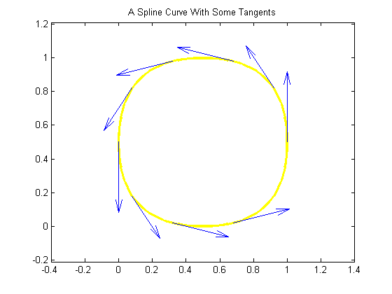
The Intersection of the Curve With a Straight Line
If you wanted to determine the points of intersection of this spline curve with the straight line y = x, the following code would give them to you, and plot the segment of that straight line inside the curve:
cuts = fnval(mycv, ... mean(fnzeros(fncmb(fncmb(mycv,[0,1]),'-',fncmb(mycv,[1,0]))))); plot(cuts(1,:), cuts(2,:),'y','LineWidth',2.5) hold off title('A Spline Curve With Some Tangents and a Cut Across')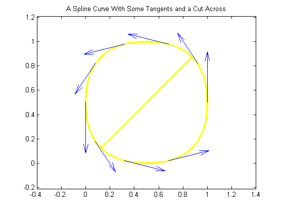
SPCRV: The Control Polygon and the Corresponding Spline Curve
Spline curves are used extensively in the generation of illustrations in which nothing more than a smooth curve of a certain roughly imagined shape is required. For this, Curve Fitting Toolbox contains a special command, spcrv, which can be used independently of the rest of the toolbox.
Given a sequence of points in the plane and, optionally, an order k, spcrv generates, by repeated midpoint knot insertion, the spline curve of order k whose control polygon is specified by the given sequence.
The figure below shows such a control polygon, and the corresponding spline curve of order 3.
points = [0 0; 1 0; 1 1; 0 2; -1 1; -1 0; 0 -1; 0 -2].'; values = spcrv(points,3); plot(points(1,:),points(2,:),'k'); axis([-2 2.25 -2.1 2.2]); hold on plot(values(1,:),values(2,:),'r','LineWidth',1.5); legend({'Control Polygon' 'Quadratic Spline Curve'}, 'location','SE');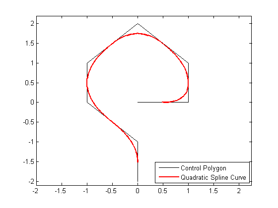
Notice that the curve touches each segment of the control polygon at its midpoint, and follows the shape outlined by the control polygon.
Raising the Order
Raising the order k will pull the curve away from the control polygon and make it smoother, but also shorter. Here, we have added the corresponding spline curve of order 4.
value4 = spcrv(points,4); plot(value4(1,:),value4(2,:),'b','LineWidth',2); legend({'Control Polygon' 'Quadratic Spline Curve' ... 'Cubic Spline Curve'}, 'location','SE');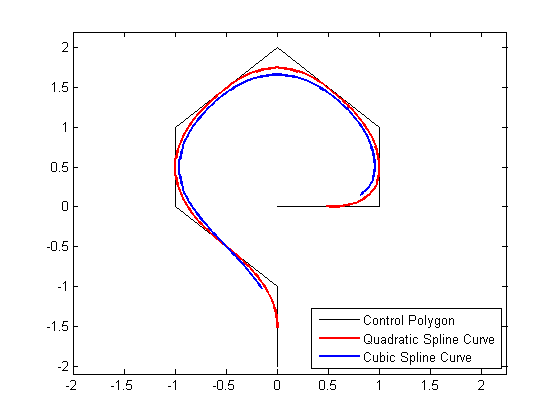
CSCVN
On the other hand, to obtain an interpolating curve, you could use the cscvn command, which provides a parametric `natural' cubic spline curve.
fnplt(cscvn(points), 'g',1.5); legend({'Control Polygon' 'Quadratic Spline Curve' ... 'Cubic Spline Curve' 'Interpolating Spline Curve'}, ... 'location','SE');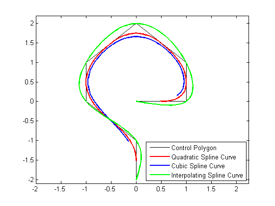
By adding the point (.95,-.05) near the second control point, (1,0), we can create an interpolating spline curve that turns faster there.
np = size(points, 2); fnplt( cscvn([ points(:,1) [.95; -.05] points(:,2:np) ]), 'm',1.5); plot(.95,-.05,'*'); legend({'Control Polygon' 'Quadratic Spline Curve' ... 'Cubic Spline Curve' 'Interpolating Spline Curve' ... 'Faster Turning Near (1,0)'}, ... 'location','SE'); hold off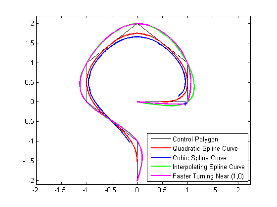
RSCVN
You can also obtain a tangent-continuous curve composed of circular arcs that passes through a given sequence of points in the plane and, optionally, is orthogonal to given normal directions at the points. The command rscvn provides such a curve.
For example, the following generates a circle
c = rscvn([-1 1 -1;0 0 0],[1 1;0 0]);
as its plot shows.
fnplt(c); axis([-1.05 1.05 -1.05 1.05]), axis equal, axis off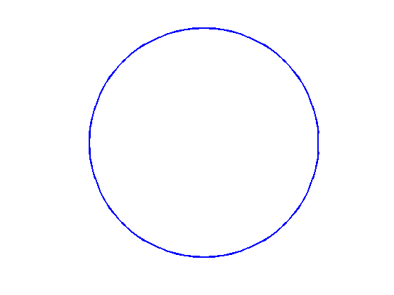
c is a quadratic rational spline consisting of just two pieces, as the following commands make clear.
[form, order, breaks] = fnbrk(c,'f','o','b')
form =
rBform
order =
3
breaks =
0 2 4
It is easy to generate striking patterns with this tool using just a few data points. For example, here is a version of the design on the Bronze Triskele Medallion in the Ulster Museum in Belfast, supposedly done by pieces of circular arcs a long time ago.
pp =[zeros(1,7); 5.4, 3, 6.9, 2.75, 2.5, .5, 5]; alpha = 2*pi/3; ca = cos(alpha); sa = sin(alpha); c = [ca sa;-sa ca]; d = [0 0 .05 -.05;1 -1 .98 .98]; d = [d c*d]; yin = rscvn([pp(:,[7,1:3]),c*pp(:,3:4),pp(:,3)], d(:,[1 2 1 4 7 5 1])); fnplt(yin), hold on, fnplt(fncmb(yin,c)), fnplt(fncmb(yin,c')) yang = rscvn([pp(:,6),-pp(:,6),pp(:,5),c*pp(:,4)],[d(:,[2 1 1]),c(:,2)]); fnplt(yang), fnplt(fncmb(yang,c)), fnplt(fncmb(yang,c')) axis([-7.2 7.2 -7.2 7.2]), axis equal, axis off, hold off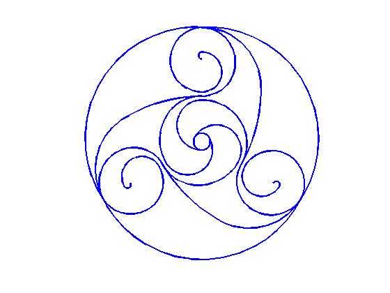